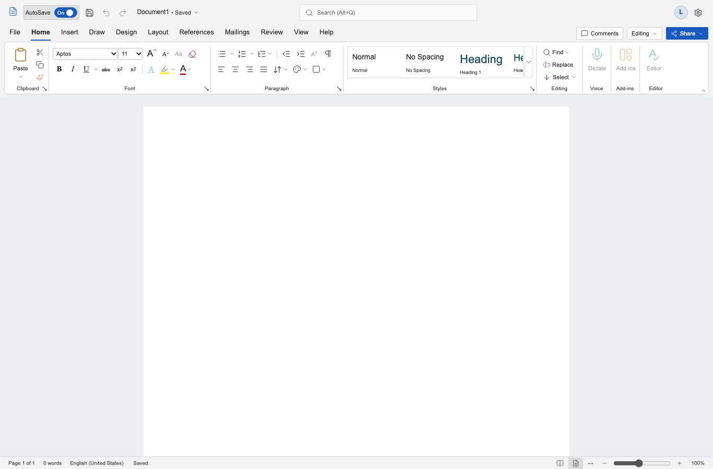

Reference: Microsoft's official Windows visual-refresh screenshot, Word window crop. Implementation: Chromium, 1366 × 900, device scale 1, browser and document zoom 100%. The source provides no native build or scaling metadata. This is an exploratory alignment comparison; it does not certify two-pixel visual parity. Icons, font rendering, account identity, and unavailable services differ.
Microsoft source and context · Parity report · Measured implementation rectangles

The official screenshot is loaded from Microsoft and is not included as an application asset. Only the Home state has a matched official pixel reference. Other captured states are reconstructed from public behavior documentation and remain visually uncalibrated.